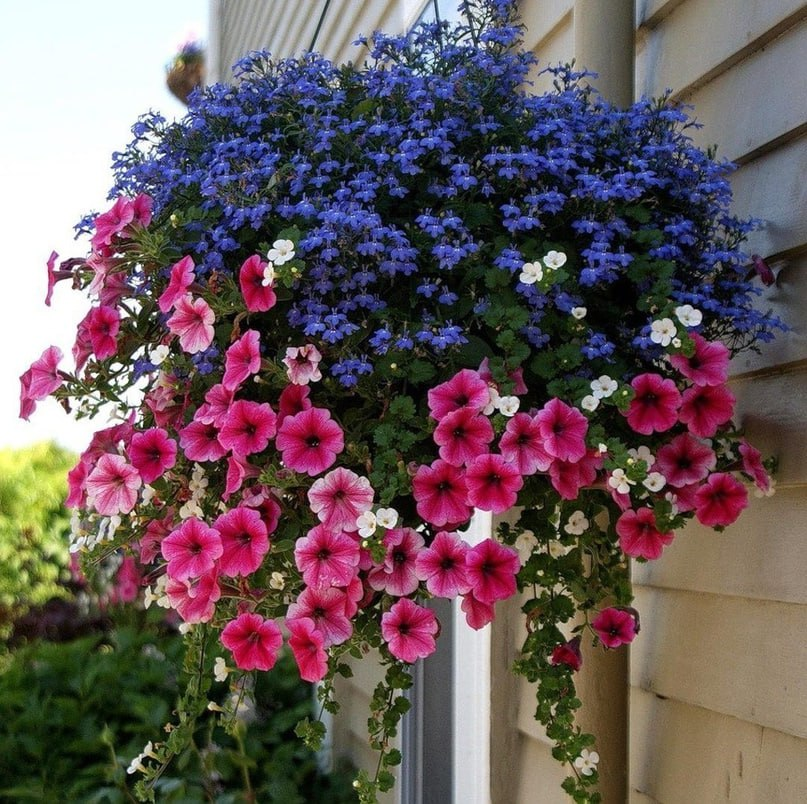
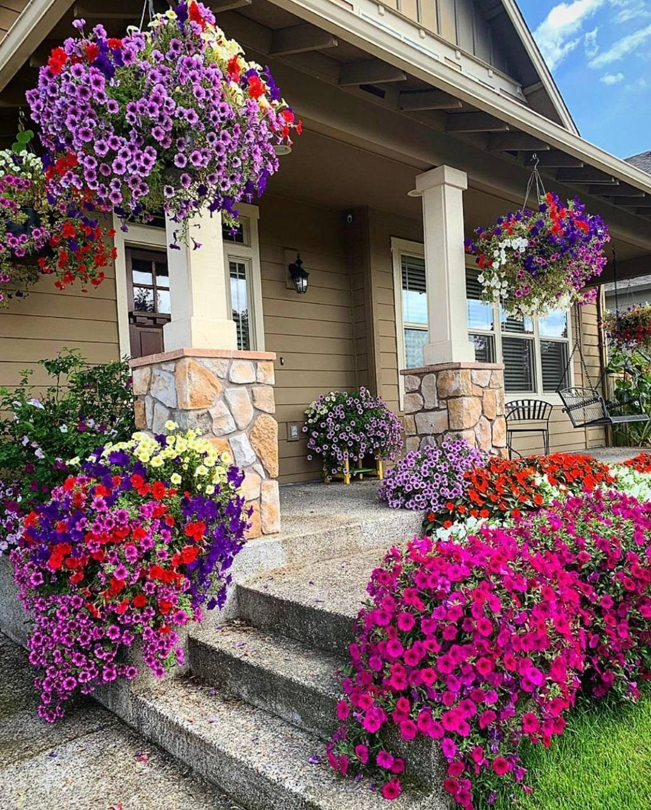
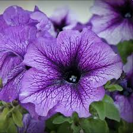

Petuniya, Solanaceae oilalig'iga mansub o'simliklardan biridir va yilning ko'p qismida yorug'lik oqimini ornatish uchun o'simlik sifatida yetishtiriladi. Bu ko'p yillik o'simliklar yuqori gullar bilan ajralganlarini yaratishda mashhur. Ular katta sirtlar, qizil, oq, yoki o'sgan rangli gullarga ega bo'lishi mumkin. Petuniya bir nechta turlarda kelib chiqadi va katta, kichik yoki yarim-tom qilib yetiladi. Ular quruq joylarga, sirtlar, toza, yoki iklimga mos holatlar bilan birga yuqori vaqt xarajatlari bilan yarim-chetga yetkazib olishadi. Petuniyalar og'ir yorug'lik talqini, yuqori unumdagi suvni, va yopiq qurolsiz joylarni sevadi. Bu o'simliklar yilning yarmi davomida rangli gullarini ochadi va har qanday bog' va shanba qayta tayyorlanishga yordam beradi. Petuniyalar og'ir toza to'g'ri to'g'ri to'g'rilab, noxushliklarga qarshi qo'llanish uchun veb sahifalarda, ba'zi muhitlarda qattiq infektsiyalarga ega bo'lishi mumkin. Ularning shakli, o'lchami va rangi bo'ylab murakkab ta'sir etilgan bir nechta sifatlarini o'z ichiga oladi.
  